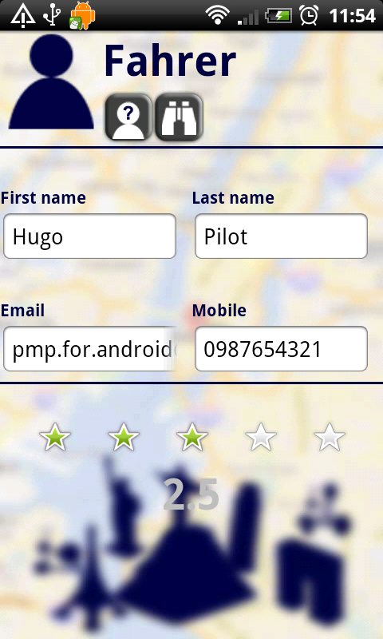

Einleitung
Zweck
Dieses Dokument stellt das Handbuch der "vHike" dar. Es soll Benutzern bei der Verwendung der vHike unterstützen. Auf eine gute Verständlichkeit wird Wert gelegt.
Leserkreis
Das Handbuch richtet sich an folgende Lesergruppen:
- den App-Benutzern
- den Entwicklern von Ressourcengruppen (für die vHike)
- den Entwicklern von Applikationen inkl. deren Service Features
- dem Kunden
- den Betreuern des Studienprojekts
Konventionen
In diesem Dokument werden mehrere Konventionen verwendet, um knapp, übersichtlich, lesbar und treffend zu sein:
- Für Überbegriffe wie Benutzer oder Entwickler wird das generische Maskulinum verwendet. Da die Deutsche Sprache hier keine zufrieden stellende Alternative kennt, sind damit selbstverständlich auch alle weiblichen Leserinnen angesprochen.
- In diesem Dokument wird die deutsche Sprache verwendet; dabei ist allerdings zu beachten, dass sich übernommene oder übersetzte Begriffe aus dem Englischen nicht vermeiden lassen. Diese werden dann jedoch grammatikalisch an die Deutsche Sprache angepasst.
- Ein Verweis in diesem Dokument auf andere Kapitel wird so dargestellt:
Grundbegriffe
Dieser Abschnitt erläutert einige Grundbegriffe die im Kontext der vHike verwendet werden.
Fahrer & Mitfahrer
Benutzer die Fahrten anbieten werden als Fahrer bezeichnet. Mitfahrer dagegen, nehmen an Fahrten teil, wobei hier auch potentielle Mitfahrer als Mitfahrer angesehen werden.
Ressourcengruppe
Jede Ressource definiert mehrere so genannte Privacy Settings. Diesen können verschiedene Werte zugewiesen werden (etwa erlauben oder nicht). Abhängig vom gesetzten Wert ist ein Zugriff auf eine Funktion der Ressource möglich (ist etwa des Privacy Setting "Datei lesen" gesetzt, das Setting "Datei schreiben" jedoch nicht, so erlaubt die Ressource "Dateisystem" nur das Auslesen einer Datei, nicht jedoch das Schreiben in eine Datei).
Service Features
Jede PMP-Applikation, wie zum Beispiel vHike, legt fest, welche Funktionen bestimmter Ressourcen sie benötigt und welche Dienste sie hierfür dem Benutzer anbietet. Diese Vereinbarung wird als Service Feature bezeichnet. Eine Applikation besitzt in der Regel mehrere Service Features. Die Ressourcengrouppen und Service Features von vHike werden in Kapitel ??? behandelt.
Im Detail legt jedes Service Feature fest, welche Ressourcen, und welche Funktionen dieser Ressource, benötigt werden. Im Gegenzug bietet die Applikation dem Anwender für den Zugriff auf diese Ressource bzw. dieser Funktion bestimmte Funktionalitäten an.
Es können bei Bedarf mehrere Service Features gleichzeitig aktiviert werden, wodurch der Funktionsumfang der Applikation erweitert werden kann.
Systemanforderungen
Um vHike installieren und ausführen zu können, muss auf dem Zielgerät mindestens Android in der Version 2.1.1 installiert sein. Auch notwending ist die Verwendung von PMP - Privacy Management Platform. Weitere Anforderungen sind ein Zielgerät mit Internet-Zugang, Bluetooth und GPS. In der Beschreibung der jeweiligen Ressourcen finden Sie in der Regel Informationen über deren Systemanforderungen.
Allgemeines
Dieser Abschnitt richtet sich an die Benutzer der vHike.
Installation
vHike wird wie eine gewöhnliche Android-Applikation installiert. Hierzu wird entweder die apk-Datei der vHike-Anwendung auf das Gerät übertragen, oder vHike wird aus dem Android Market ausgewählt. Folgen Sie anschließend bitte den Anweisungen des Android-Betriebssystems.
Sprache
Die Beschriftung der Elemente der Benutzeroberfläche erfolgt durchgängig in Englisch. Andere Sprachen werden momentan nicht unterstützt.
Da, wie bereits erwähnt, die Standard-Beschriftung auf Englisch erfolgt, wird auch in den Bildschirmfotos und bei der Benennung der Schaltflächen in den folgenden Abschnitten die englische Variante verwendet.
Funktionen
vHike - Standard/Bluetooth
{kind=link}
Ausgangspunkt der Verwendung von vHike bildet das Login-Menü, dass sich beim Starten der Anwendung öffnet. vHike bietet zwei Varianten der Verwendung an. Die Standard-Funktion (siehe ) und die Bluetooth-Variante (siehe ). Über das Login-Menü kann zwischen diesen beiden Varianten ausgewählt werden.
Einloggen
Für die Standard-Funktion ist eine Registrierung (siehe ) erforderlich. Nach erfolgreicher Registrierung kann man sich über den Benutzernamen und Passwort einloggen. Beim Anhaken des "Auto-Login" Kästchens, wird beim Neustarten von vHike Benutzername und Passwort gemerkt und automatisch eingeloggt. Ein Anhaken des "Remember"-Kästchens werden Benutzername und Passwort gemerkt, jedoch nicht automatisch eingeloggt.
Bei fehlerhaftem Benutzernamen oder Passwort wird ein Toast zur Benachrichtigung geworfen.
Registrieren
{kind=link}
Um sich erfolgreich registrieren sind folgende Felder auszufüllen. Felder mit einem * versehen sind zur Registrierung nötige Daten, der Rest optional:
- Benutzername*
- Beschreibung
- Vorname
- Nachname
- Email-Adresse*
- Handynummer
- Passwort*
Hauptmenü
{kind=link}
Fahrt planen/teilnehmen

Profile
{kind=link}
History

My Trips

My messages
Logout
Bluetooth

Um die Bluetooth-Variante der Applikation "vHike" benutzen zu können, brauchen Sie ein Gerät mit integriertem Bluetooth. Bluetooth-Variante ist weniger komplizierter gehalten, als die Standart-Variante der Applikation "vHike", da diese Funktionen, wie die Google-Kartenansicht nicht unterstüzt und hier nur auf das schnelle Suchen/Anbieten der Fahrten Wert gelegt wird. Die Reichweite von Bluetooth ist vom Gerät abhängig. Die Schaltfläche "Ride" bringt Sie in eine weitere Ansicht von der Bluetooth-Variante
Bluetooth Fahrt anbieten/suchen

Diese Ansicht erinert an die Standart-Variante. Hier kann das Ziel, Anzahl der Sitze und wie lange das Suchen "Search" bzw. das Anbieten "Drive" der Fahrt dauert. Sobald eine Fahrt gefunden wurde, wird diese in einem Dialog angezeigt und man kann sich sofort mit dem Fahrer verbinden. Solange wartet der Fahrer auf eingehende Anfragen. Nach erfolgreichem Paaren der Geräte wird ein Chat geöffnet . Sobald eine Vebrindung getrennt wird bekommet der Benutzer im Chat Verlauf eine Nachricht mit "Connection Lost!"
Ressourcengruppen
vHikeWS -RG
Service Features
Location -RG
Service Features
Bluetooth -RG
Service Features
Kommunikation/Contact -RG
Service Features
Versionshistorie
Version 0.1 (20.09.2011)
- Initiales Gerüst von PMP Handbuch